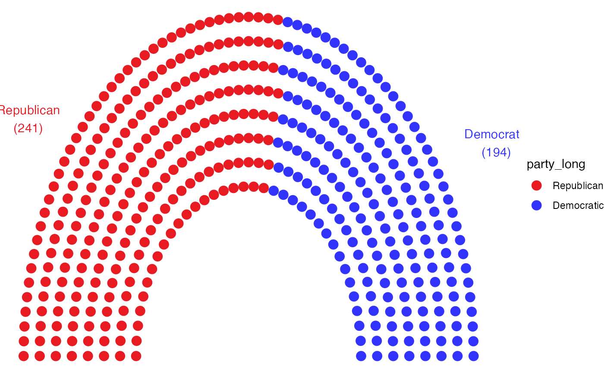

R/draw_partylabels.R
draw_partylabels.RdDraw labels for political parties and seats per party
draw_partylabels(type = c("semicircle", "horseshoe"), names = TRUE,
seats = TRUE, party_names = party_names, party_colours = party_colours,
party_seats = party_seats)Define type. Currently only supports semicircle and horseshoe style parliaments.
If TRUE, finds party names from data. Defaults to TRUE.
If TRUE, finds party seats from data. Defaults to TRUE.
A column containing party names.
A column containing party colours.
A column containing party seats.
data <- election_data[
election_data$country == "USA" &
election_data$house == "Representatives" &
election_data$year == "2016",
]
usa_data <- parliament_data(
election_data = data,
type = "semicircle",
party_seats = data$seats,
parl_rows = 8
)
ggplot2::ggplot(usa_data, ggplot2::aes(x, y, colour = party_long)) +
geom_parliament_seats() +
draw_partylabels(
type = "semicircle",
party_names = party_long,
party_seats = seats,
party_colours = colour
) +
ggplot2::scale_colour_manual(
values = usa_data$colour,
limits = usa_data$party_long
) +
theme_ggparliament()
